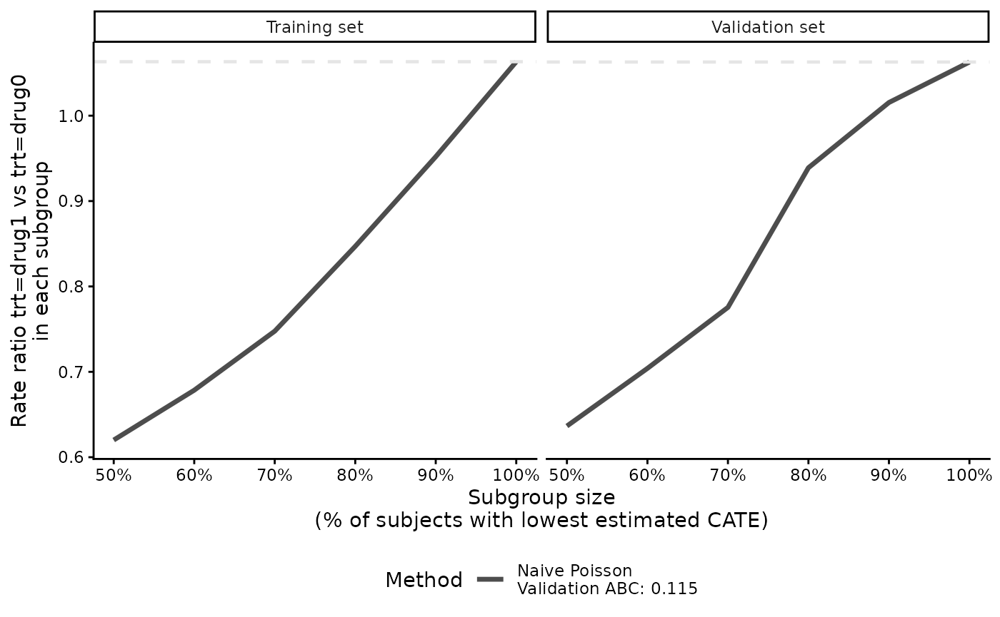

This example uses precmed to explore whether treatment effects differ across patients, and to assess a prediction model using cross-validation. It uses the included simulated multiple sclerosis data and a count outcome: the number of relapses during follow-up.
Is precmed suitable for me?
| Question | Guidance |
|---|---|
| What data can I use? | Individual-level data from a randomized trial or an observational study. |
| What treatments can I compare? | Two treatments at a time. |
| What outcomes are supported? | Count and time-to-event outcomes. |
| What can I estimate? | An overall average treatment effect (ATE) and conditional average treatment effects (CATEs) for patients with given observed characteristics. |
| Can I assess model performance? | Cross-validation, subgroup curves and other diagnostics help assess treatment-effect predictions. |
| Can I interpret the estimates causally? | Only when the relevant assumptions are justified. Observational analyses require, among other assumptions, adequate control of confounding and sufficient treatment overlap. |
Install and load
Install the released version from CRAN, then load the package:
install.packages("precmed")The data contain 4,000 patients. y is the number of
relapses, years is follow-up time, and trt
identifies the two treatments (drug0 and
drug1). The other variables used below are baseline patient
characteristics. Age is centered and previous cost is centered and
scaled in this dataset.
Estimate the overall treatment effect
Start with atefit() to estimate the average treatment
effect across the study population. For count outcomes, it estimates a
relapse rate ratio comparing drug1 with drug0.
The outcome model includes a log follow-up offset, and the propensity
score model describes treatment assignment using baseline
characteristics.
overall <- atefit(
response = "count",
data = countExample,
cate.model = y ~ age + female + previous_treatment +
previous_cost + previous_number_relapses + offset(log(years)),
ps.model = trt ~ age + previous_treatment,
n.boot = 50,
seed = 999,
verbose = 0
)
overall
#> Average treatment effect:
#>
#> estimate SE CI.lower CI.upper pvalue
#> log.rate.ratio 0.06311746 0.1624482 -0.2552752 0.3815101 0.6976173
#>
#> Estimated event rates:
#>
#> estimate
#> rate1 0.2860635
#> rate0 0.2685660The output reports the log rate ratio and bootstrap-based
uncertainty. Exponentiate the estimate to obtain the rate ratio; a value
below 1 indicates a lower estimated relapse rate with
drug1. The estimator is doubly robust: under the required
causal and other regularity assumptions, it is consistent if either the
outcome model or the propensity score model is correctly specified. The
50 bootstrap replicates used here keep the example short; use more for a
substantive analysis.
exp(overall$log.rate.ratio$estimate)
#> [1] 1.065152The overall effect can mask differences across patients. Next, we explore treatment effect heterogeneity.
Fit and validate a model
catecv() fits a conditional average treatment effect
(CATE) scoring model and evaluates it with cross-validation. Here, the
outcome model includes a log follow-up offset to model relapse rates.
The propensity score model describes treatment assignment using age and
previous treatment. Because fewer relapses are better, we set
higher.y = FALSE.
Inspect the validation curves
plot(fit)
The curves summarize estimated treatment effects in nested subgroups ranked by the model’s predicted treatment effect. Compare the training and validation panels: a pattern that persists in validation provides more support for the model’s ability to distinguish subgroups than one seen only in training. These results are illustrative, and internal cross-validation alone does not establish performance in a new population.
Next steps
- Follow the count outcome tutorial to estimate the overall treatment effect, compare scoring methods, and interpret validation results.
- See the survival outcome tutorial for time-to-event data.
- Explore model and validation options and the methods.
For observational data, causal interpretation depends on assumptions including adequate control of confounding and sufficient treatment overlap. A CATE describes an average effect conditional on observed characteristics; it does not reveal an individual patient’s actual benefit.
For further background, see Chapter 5: Understanding and defining causal effects for marginal and conditional effects, and Chapter 17: Introduction to methods for personalizing medicine for treatment-effect prediction.